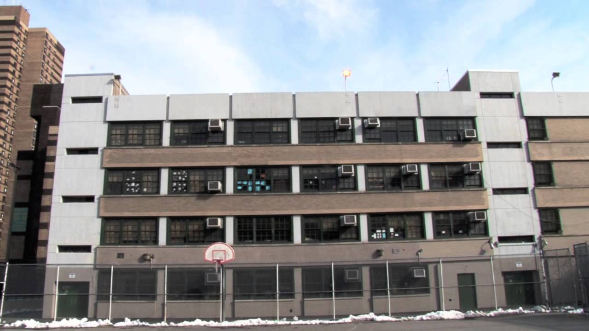
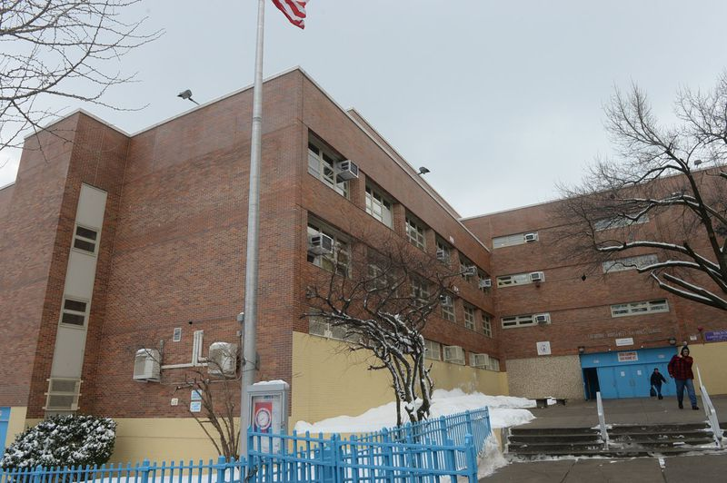

When I was in the Dominican Republic I attended the private school
called "Notre Dame School. I was there from k-7th grade. They had
events such as science fairs
where kids are divided into groups and do scientific research which
then later on they have to present in front of judges. The school also
had international fairs, an event where kids do
research about a country and dress up in that coutry's traditional
clothing, and also have to expose to judges. I was part of the Honor
Society as well.
I did 8th grade here in the city. I attened MS129, and it was a good experience. There were a lot of field trips, and I was also part of the Honor Society.
I am currently enrolled in Bronx Latin High School. This school is ranked top 50 in The Bronx. I am part of the Honor Society, and do volunteer work in the school.
